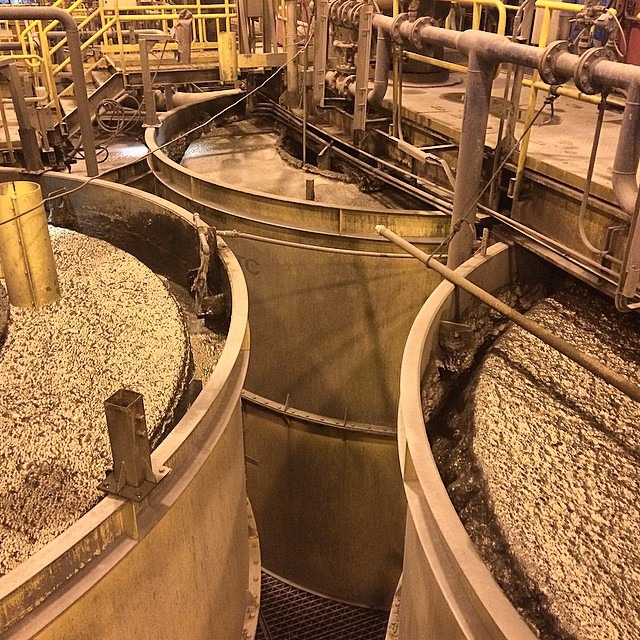
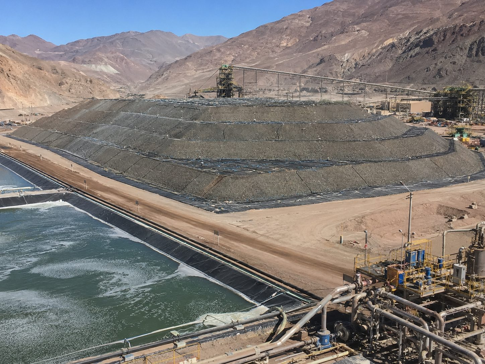
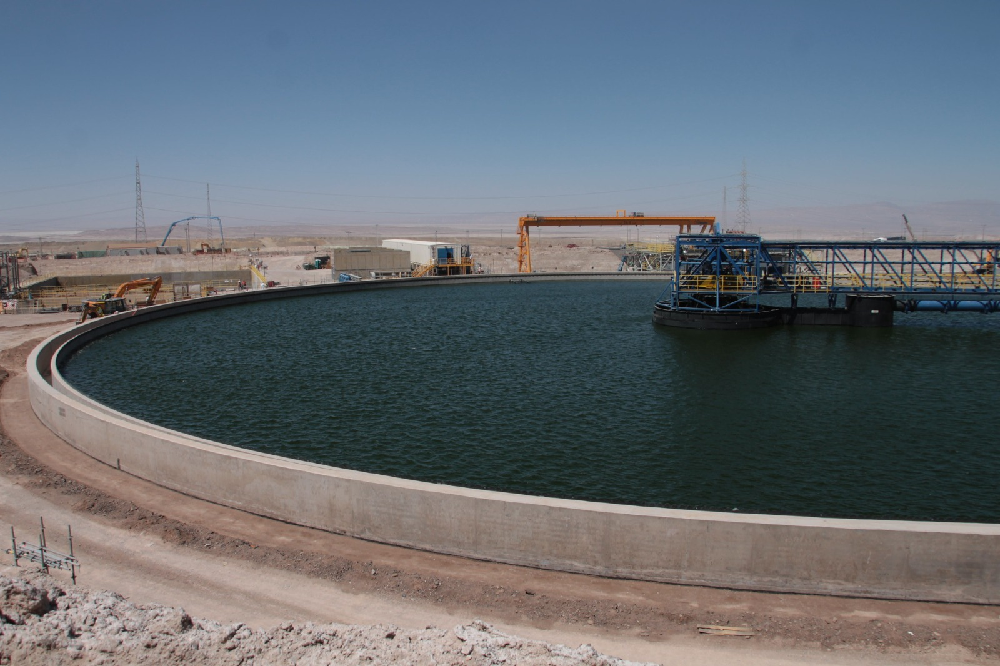

La biología de tu procesofinalmente tiene dueño.
Leemos las comunidades microbianas que viven en la pulpa, el agua de proceso y el mineral de tu planta — flotación, lixiviación, relaves — y las convertimos en inteligencia operacional propietaria. Desde la mineralogía de cabeza hasta el concentrado final, construimos los indicadores que tu SCADA nunca te va a dar.
Los datos existen.
Pero nadie los conecta.
SCADA, laboratorio, LIMS, microbiología, historiadores, ERP. Cada sistema genera información crítica, pero trabajan como islas. Las decisiones se toman cuando el problema ya impactó la operación.
El verdadero pulso de tu operación está en la biología de la pulpa, el agua de proceso y el mineral: el indicador de cambio más rápido, y hasta hoy, el más ignorado. En BetterMin decodificamos ese poder biológico para convertirlo en tu mayor ventaja competitiva.

Tres fuentes de inteligencia. Una plataforma.
Datos de la planta
Datos de la mina
Datos biológicos del proceso
Mina, planta y biología convergen en un solo motor de inteligencia.
Lo que construimos no se copia con software.
Tres activos que se refuerzan entre sí. Ninguno es genérico. Los tres crecen con cada operación que se suma a la plataforma.
Datos propietarios
Mine-to-Plant
No procesamos datos públicos. Integramos el flujo completo de cada planta — desde la mineralogía de cabeza hasta el concentrado final — en un modelo de trazabilidad total. Cada operación suma un activo de datos que no existe en ningún otro lugar.
Pipeline de caracterización
biológica
Secuenciamos, identificamos y cuantificamos las comunidades microbianas de la pulpa, el agua de proceso y el mineral de cada cliente. No usamos consorcios genéricos: caracterizamos lo que YA está vivo en la operación y lo convertimos en indicadores operacionales propietarios.
Motor de IA
con contexto de planta
Modelos de machine learning entrenados con datos reales de cada faena. Gemelo digital, simulación what-if y agentes de IA que responden con trazabilidad completa — cada predicción tiene data lineage hasta la variable de origen.
Tres activos. Una plataforma. Cero datos genéricos.
Procesos mineros con inteligencia integrada.

FlotaciónFlotación
Monitoreo de estabilidad, predicción de recuperación con contexto mineralógico y alertas tempranas de desviación del proceso.

LixiviaciónLixiviación
Control de cinética, potencial redox y modelo predictivo de recuperación con alertas de acidificación temprana.

RelavesRelaves
Monitoreo de estabilidad, espesado y trazabilidad de campañas con detección temprana de riesgo ambiental.
No hacemos esto solos.
Investigación con respaldo académico
Colaboramos con universidades y centros de investigación en microbiología aplicada a procesos mineros, co-publicación de hallazgos y formación de talento especializado. Nuestro pipeline de caracterización biológica se construye sobre rigor científico validado por pares.
Caracterización sin externalizar
Controlamos el ciclo completo de caracterización biológica — desde la toma de muestra en faena hasta el análisis bioinformático — sin depender de laboratorios externos. Una biotech minera sin capacidad de laboratorio propia es solo software.
UNIVERSIDADES · CENTROS I+D · EMPRESAS MINERAS · PARTNERS TECNOLÓGICOS
No vendemos herramientas.
Desarrollamos conocimiento.
Inteligencia Artificial
Machine Learning, modelos predictivos y agentes inteligentes para optimización de procesos mineros.
Biotecnología Industrial
Microbiología aplicada, bioinformática y metagenómica para caracterización de comunidades microbianas en faena.
Gemelos Digitales
Modelos operacionales que integran datos en tiempo real con simulación what-if para decisiones informadas.
Agentes IA
Sistemas multi-agente con RAG y LLM para recomendaciones trazables en lenguaje natural.
Ciencia de Datos
Análisis de series temporales, detección de anomalías y optimización de variables operacionales.
Inteligencia Operacional
Plataforma de integración de datos SCADA, laboratorio, IoT y metagenómica en un solo modelo.
La minería del futuro será más inteligente, más integrada y más biológica.
Descubra cómo BetterMin transforma datos operacionales, mineralógicos y biológicos en decisiones inteligentes que mejoran el desempeño de los procesos mineros.